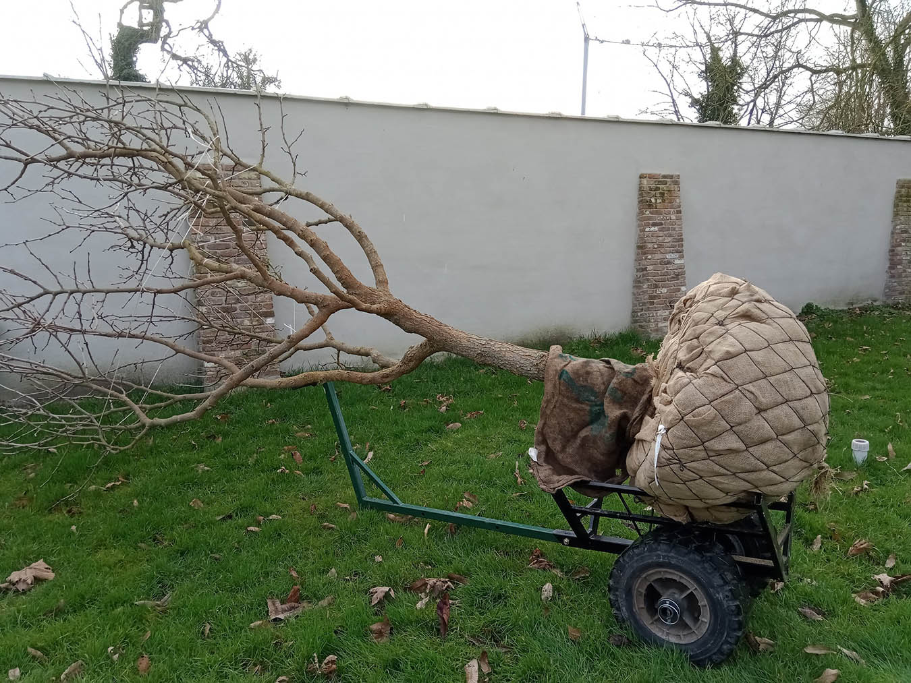
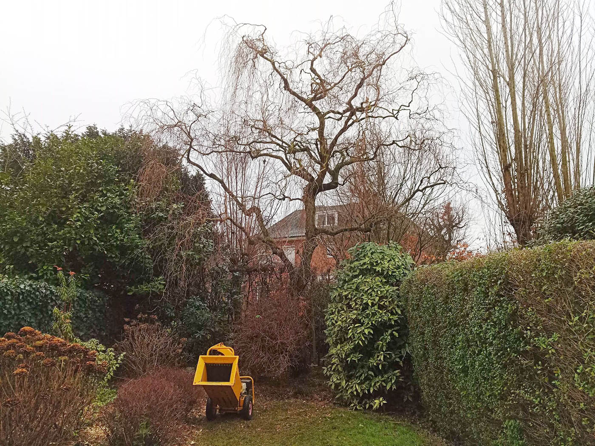
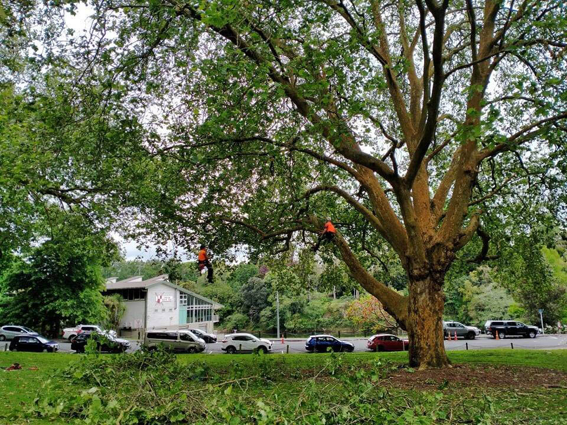
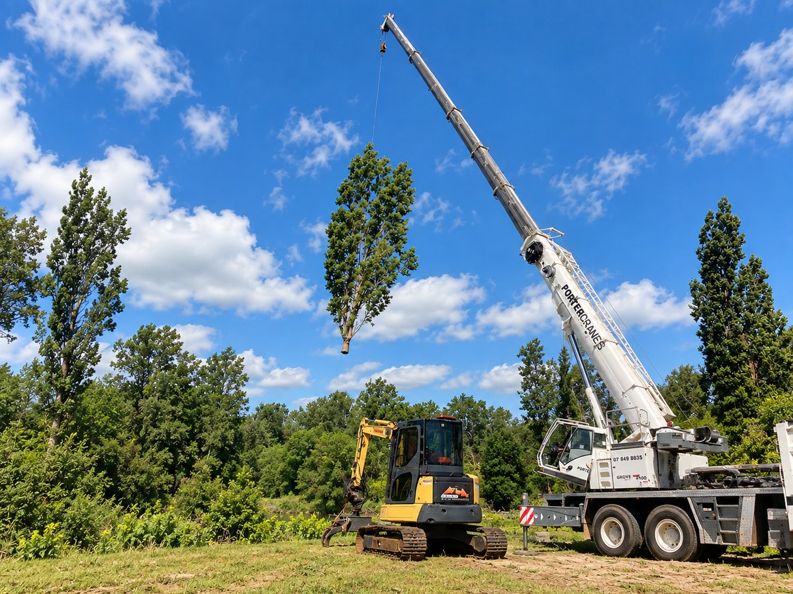
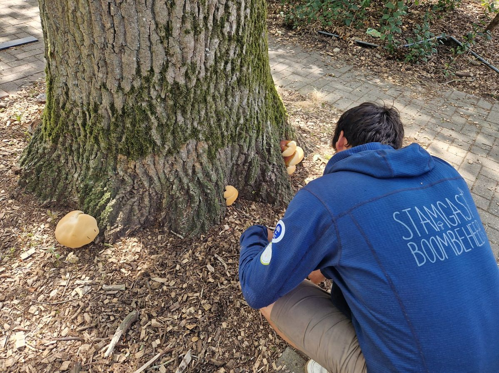
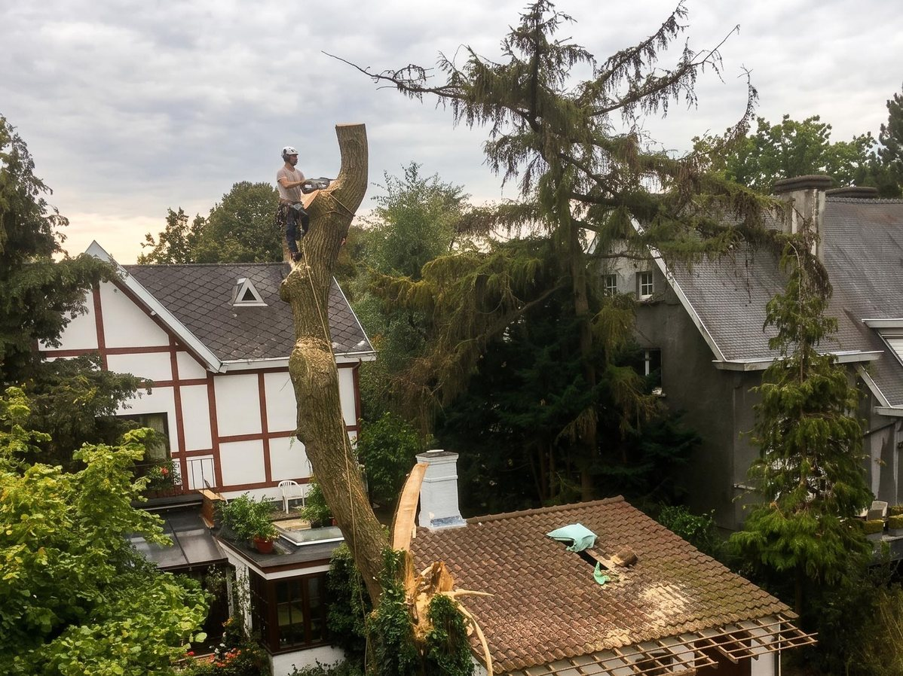

Eerlijkheid en vakkennis worden het meest gewaardeerd. Lees wat klanten uit de regio ervaren na een samenwerking met Lode.
Een greep uit de projecten die Lode de voorbije maanden uitvoerde.






Rechtstreeks overgenomen uit Google Reviews.
"Lode heeft onze oude eik geïnspecteerd en besloten dat snoeien niet nodig was. Dat eerlijk advies, ook al kost hem dat werk, zegt alles over zijn aanpak."
"Vakkundig, snel en netjes. Na de stormschade was hij binnen de dag ter plaatse. De boom is gered en staat er nu beter bij dan ervoor."
"Eindelijk een boomverzorger die uitlegt wat hij doet en waarom. Geen overbodige snoei, gewoon goed advies en goed werk. Zeker aan te bevelen."
"Lode heeft onze oude beuk een tweede leven gegeven. Zijn kennis van oude bomen is indrukwekkend. Blij dat we voor het behoud van onze boom zijn gegaan."